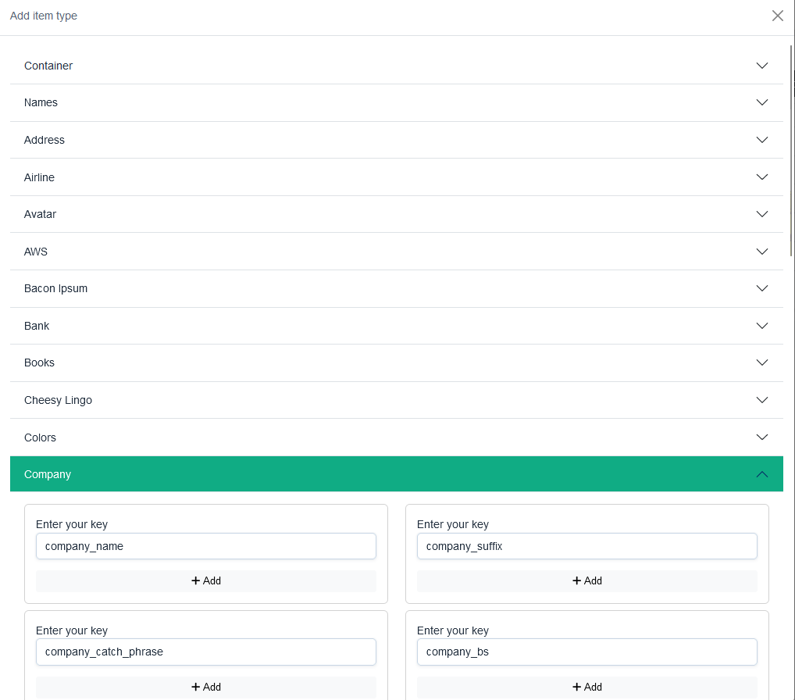
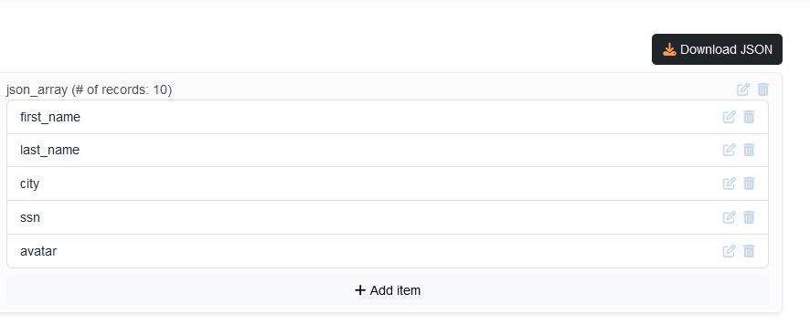
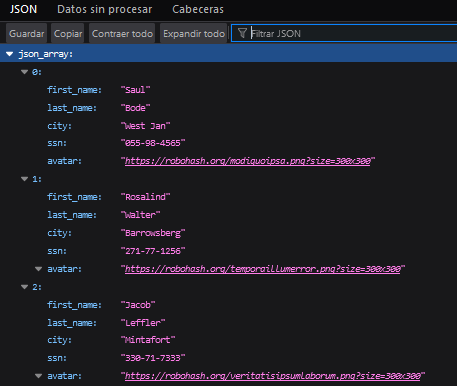

La API utilizada para este pequeño trabajo se llama Random Data API, es similar a la API mostrada en el ejemplo de como utilizar una API con AJAX, permite crear multiples proyectos y modificarlos a gusto del usuario desde crear arrays hasta 10 elementos como el tipo de nombre, apellidos, identificadores, cuentas de banco, crypto,etc.
  